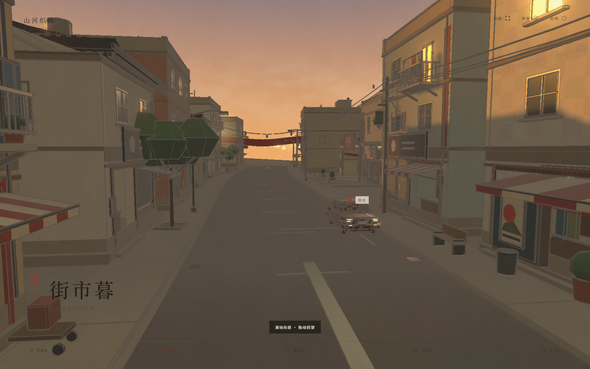
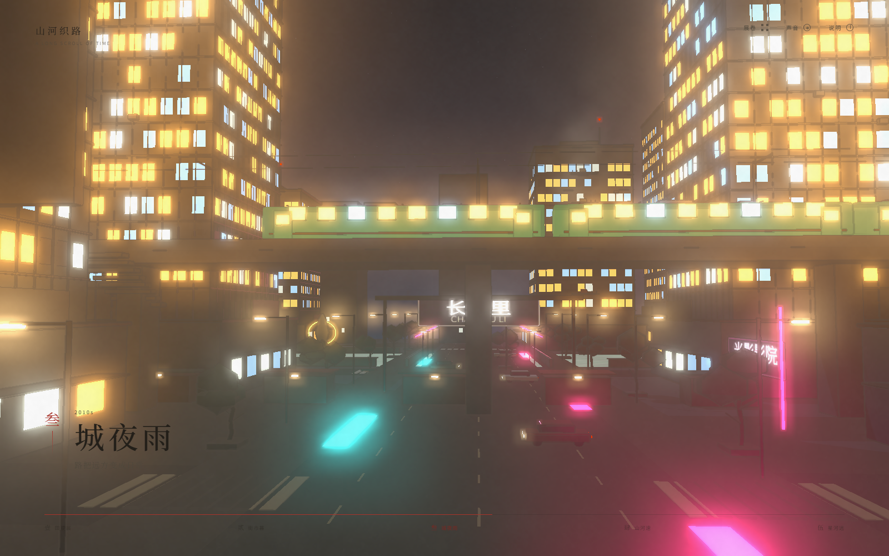
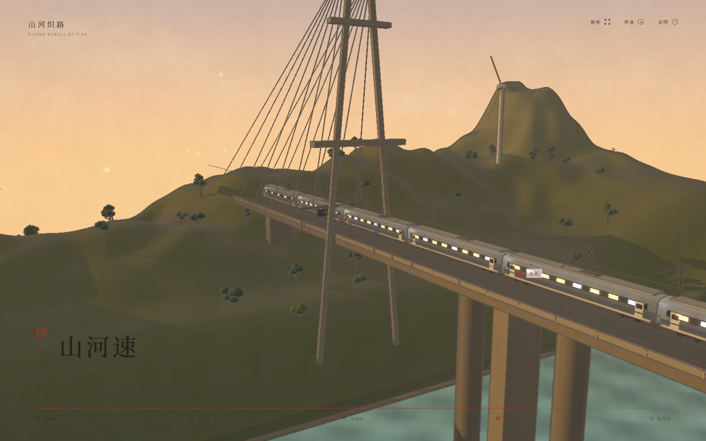
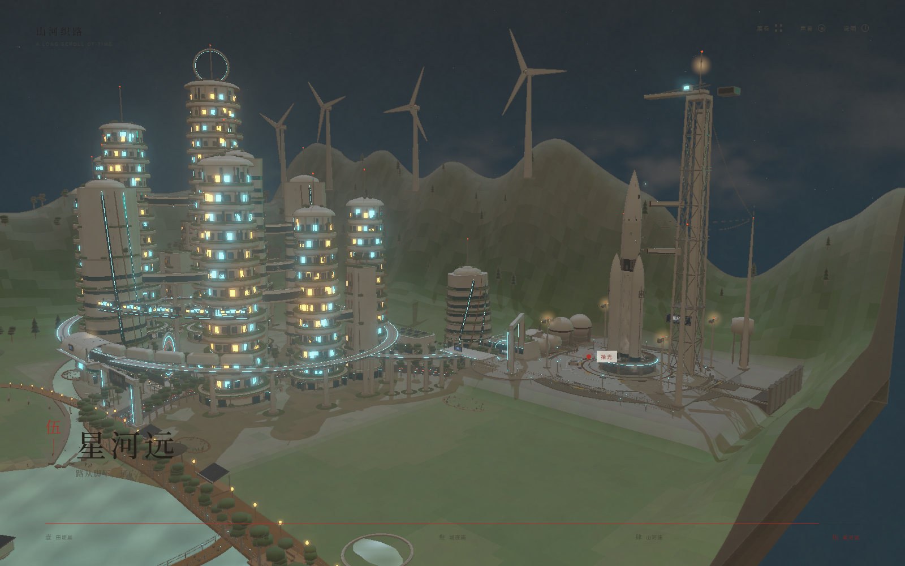
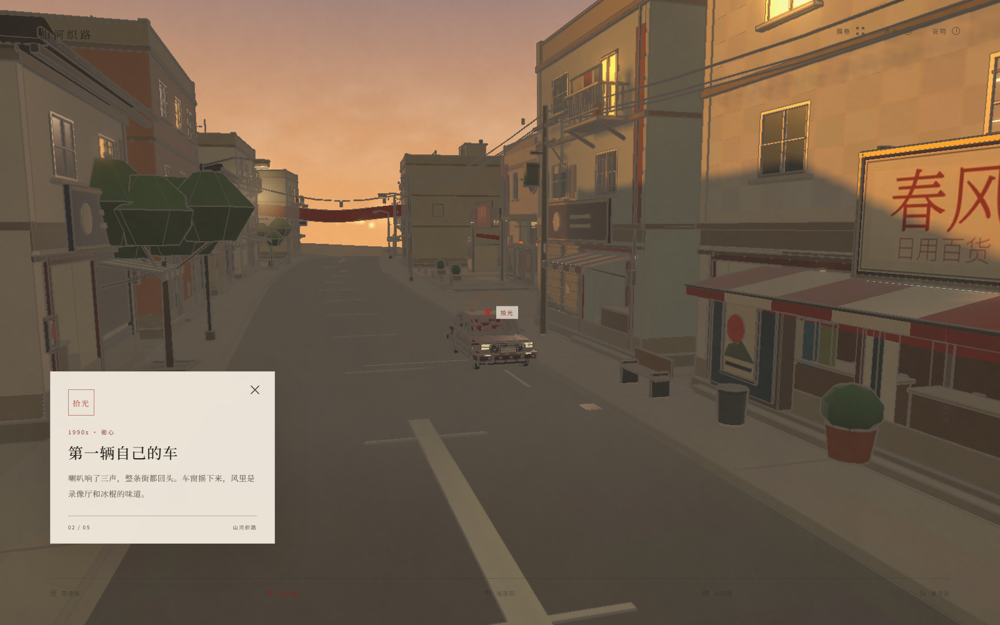

2026 新锐设计竞赛 · 华灿奖 / 创意赛道 · 数字媒体设计
山河
织路
一部可漫游的立体长卷
A LONG SCROLL OF TIME
一条路，把五段中国时间织在一起。
从田埂出发，穿过街市、城市与山河，最后通向星河。
 展卷 · 五座时代之岛 / 一根红线
展卷 · 五座时代之岛 / 一根红线
主题 / 融合
路是针脚
中国的发展常被写成宏大的数字。但数字之外，它更像一条路：从田埂出发，穿过街市、城市与山河，最后通向星河。路不是背景，路是针脚——它把乡土与城市、旧日与未来、人与土地缝在一起。
作品把“路”抽成一根贯穿全篇的红线，也把五个时代做成五座悬浮的立体微缩景观。观众不是在看一张时间轴，而是在一根线上行走：从一座岛走进另一座岛，在纸白的虚空里看见红线把时代缝合。走到尽头，可以点亮一枚火箭，为未来放一盏灯。
时间的融合五个时代由一条连续的路缝合。转场是“织过去”，不是“切过去”；镜头上升，看见上一座岛、下一座岛与中间的红线，再落回人间。
空间的融合田埂、街市、都市、山河、太空并置成一轴立体长卷。五座 320m 见方的岛悬在纸白虚空里，间隔约 120m。
技术的融合Blender 4.2 程序化建模 + Three.js r169 实时渲染 + WebAudio 程序合成声音；所有资产由本项目脚本生成。
情感的融合每个时代都有一件载具和一句“路上的人话”，宏大叙事落回可触摸的日常：车把上的马灯、第一辆自己的车、夜班车的窗。
 田埂晨 · 1980s · 路是走出来的。
田埂晨 · 1980s · 路是走出来的。
“融合”不是把五种风格拼在一起，而是让它们共享同一条曲线、同一套光照语法、同一种纸感。差异来自时代，统一来自路。
结构 / 一条路的五个刻度
五幕 · 时间在一条路上展开
| 幕 | 年代 | 场景 | 载具 | 一句话 |
|---|
| 壹 · 田埂晨 | 1980s | 梯田、白墙黛瓦、晒谷场、晨雾、村口门楼 | 人力车 | 路是走出来的。 |
| 贰 · 街市暮 | 1990s | 县城主街、供销社、电影院、河边、梧桐 | 汽车 | 路通向更大的世界。 |
| 叁 · 城夜雨 | 2010s | 高楼、霓虹、高架、绿皮车穿城、雨夜 | 绿皮火车 | 路把远方变成日常。 |
| 肆 · 山河速 | 2020s | 大跨度斜拉桥、动车组、云海群山、江面 | 高速动车 | 路让山河彼此相拥。 |
| 伍 · 星河远 | 未来 | 零碳山城、发射场、风机、极光、星海 | 重型火箭 | 路从脚下，通向星辰。 |
壹人力车
木轮 / 苇席棚
车把上的马灯
贰汽车
方灯 / 镀铬格栅
第一辆自己的车
叁绿皮火车
车窗格 / 雨夜穿城
每一格都是一个回家的人
肆高速动车
流线车头 / 桥塔拉索
一杯茶的时间
伍重型火箭
三助推 / 栅格舵
为未来放一盏灯

街市暮 · 1990s · 供销社与主街

城夜雨 · 2010s · 高架与万家灯火

山河速 · 2020s · 斜拉桥与动车

星河远 · 未来 · 零碳山城与发射场
五件载具均由 Python 脚本程序化构建，尺度从 1.8m 到 200m；每一件都保留了可被辨认的结构细节：车轮辐条、镀铬格栅、车窗格、受电弓、栅格舵。
视觉系统 / 手作模型
不做写实照片感，也不做低幼低多边形
用大量真实构造细节——瓦垄、窗棂、阳台、空调机、电线、桥梁拉索、火箭发动机——加上克制的低饱和配色、纸纹颗粒与轻雾，形成“手作模型”的质感。几何是低多边形的，但构造是可信的；颜色是克制的，但光是准确的。
纸白虚空岛与岛之间不是黑场，而是温暖纸白的留白。转场时镜头升到高空，看见红线把时代缝在一起。
中国红路在场景中是土路、柏油、钢轨、光轨；在转场与总览中变成一根发光的红线。红是唯一贯穿全片的饱和色。
低饱和乡土米白黛瓦、城镇琥珀砖红、城市深蓝霓虹、高铁黎明粉金、未来靛蓝极光；每个时代有自己的色温，但共享纸感。
晨雾 / 斜拉索 / 银白动车 · 2020s
色彩与光
乡土：米白、黛瓦、秧绿、土黄、朱红点缀。城镇：琥珀、砖红、青灰、初亮的暖黄窗光。城市：深蓝、湿沥青、青蓝玻璃、霓虹洋红/青、万家灯火。高铁：黎明粉金、钢蓝山脊、银白列车、青绿江水。未来：靛蓝、极光青、白色曲面建筑、金色尾焰。
镜头
低机位穿行与高空俯瞰交替；35–50mm 电影感焦距；轻微手持呼吸感；关键节点停一拍。转场用“升空—看见红线—落回”的卷轴式空间转场，配合纸白雾与印章动画；章节跳转使用水墨遮罩。
城市 · 深蓝与霓虹 · 2010s

纸卡 · 拾光 · 1990s
交互系统 / 走进去，而不是观看
四种动作，一条连续的线
启程 · 落在田埂上空纸白虚空中的乡村岛，标题、诗句与启程按钮。点击后红线从画面里穿出，镜头俯冲入村。
漫游 · 沿红线前进滚轮或上滑前进，下滑回望；按住拖动改变视线；方向键 / 空格同样可用。章节标题与年份在到达时淡入，不打断漫游。
拾光 · 点击载具每一幕有一个不打扰的拾光点：人力车、汽车、车窗、桥塔、火箭。点击展开一张纸卡，读一句那个时代的“路上的人话”。
展卷 · 俯瞰五座岛右上角“展卷”把镜头拉到纸白虚空，五座岛与红线尽收眼底；点击任一岛可飞回该幕，Esc 退出。
放灯 · 为未来点一盏灯在终点输入或选择一句愿望，点亮火箭；火箭升空，孔明灯与星屑一起升起，愿望以纸上小字随灯飘远。
拾光 · 一张纸卡，一句人话
展卷 · 五座岛与一根红线
可及性：所有按钮可聚焦；Esc 退出模态；尊重 prefers-reduced-motion：界面过渡与动画减弱，3D 漫游保留；声音默认开启但可一键静音；移动端 DPR 上限 1.5、触摸目标 ≥ 44px、低性能设备自动关闭泛光与降低阴影。
“拾光”是唯一的支线，也是叙事的呼吸口。它不奖励点击、不收集成就，只给一句话；关掉之后，路继续。
一条 102 秒的线五幕时长配比 · 停留与转场都算在叙事里
壹 · 18s田埂晨
贰 · 20s街市暮
叁 · 20s城夜雨
肆 · 18s山河速
伍 · 26s星河远 · 放灯
技术实现 / 从脚本到实时
手作模型的数字实现
所有几何由 Blender 4.2 Python 脚本生成；所有贴图由脚本绘制；所有声音由 WebAudio 实时合成；演示视频由确定性帧渲染生成。没有下载的模型、图片或音乐。
五座岛320 × 300m / 间隔 120m
总三角面824,373 tris
五件载具1.8m — 200m
在线首包约 12MB / Meshopt
离线单文件全部资产内嵌 / 双击打开
实时渲染Three.js r169 / WebGL2
声音WebAudio / 无采样
视频1080p / 24fps / 102s / 原创配乐
资产管线
- Blender Python 构件库：瓦屋顶、窗棂、阳台、空调、电线、桁架、斜拉索、火箭喷管。
- 按材质合并，导出 glTF；纹理绘制成招牌图集与纸纹。
- glTF Transform：量化 + Meshopt 压缩 + WebP 纹理，保留 FX 空节点。
- 五岛 + 五载具独立 GLB，置于同一条世界轴线。
实时管线
- 连续相机曲线 + 章节时间轴；天空 / 雾 / 光照随章节插值。
- 自定义水面、雨、烟、星、孔明灯；Bloom + 纸纹 + 暗角后期。
- 移动端低质量档：DPR 1.5、关闭泛光、阴影 1024。
声音
- 五段可循环的时代氛围：乡村风声 / 鸟鸣、城镇市声 / 车铃、城市雨声 / 车流 / 远处喇叭、高铁风噪 / 钢轨节奏、未来低频 / 脉冲。
- 一支共享的五声音阶随机钟琴，随章节换和弦；交叉淡化。
- 火箭升空：低频轰鸣 + 上升噪声 + 子低音；所有声音由 WebAudio 节点实时合成。
- 演示片配乐以同一组五幕和弦为骨架，用 numpy 程序合成；不含采样或外部音乐。
影像
- Playwright 驱动固定的 24fps 时间步；冻结 RAF，逐帧推进，保证可复现。
- 1080p JPEG 帧序列经 FFmpeg 编码 H.264；章节字幕与操作提示为独立叠加层。
星河远 · 未来 · 零碳山城 / 发射场 / 风机
全流程原创 / 可复现
所有远方，都从脚下出发
一条路，把五段中国时间织在一起。
原创性声明
- 场景、建筑、植被、载具、道具全部由本项目 Blender Python 脚本生成。
- 招牌文字、纸纹、印章、光晕等贴图由脚本绘制或程序生成。
- 交互音乐与音效全部由 WebAudio 节点实时合成；演示片配乐由 numpy 程序合成；均未使用采样库或外部音乐。
- 字体使用系统宋体 / 思源宋体回退；未打包未授权字体。
- 没有下载的模型、图片或音乐；没有使用第三方生成式资产。
交付清单
- 实时 H5 · 在线版（dist/）
- 实时 H5 · 离线单文件（dist/山河织路-离线单文件.html）
- 1080p 演示视频（dist/山河织路-演示片.mp4，约 1 分 42 秒）
- 设计展板 5 张（docs/boards/，2400 × 1500）
- 交互流程图 PDF（docs/交互流程图.pdf）
- 设计说明 PDF（docs/设计说明.pdf）
- 源文件与构建脚本（src/、tools/、assets/）
运行方式
- 在线：
npm run serve，打开 http://localhost:8123。
- 离线：双击
山河织路-离线单文件.html；首次点击后启动声音。
- 操作：滚动 / 触摸上滑前进，下滑回望；拖动改变视线；点击拾光；右上角展卷；Esc 退出展卷。
设备与适配
- 桌面：Chrome / Edge / Safari 最新版；1920×1080 目标 60fps。
- 移动：iOS Safari / Android Chrome；DPR 上限 1.5；低质量档自动启用。
- 离线文件无需服务器；WebAudio 受浏览器自动播放策略限制，首次点击后启动。
构建命令
node tools/build_h5.mjs # 在线版
node tools/build_offline.mjs # 离线单文件
node tools/render_video.mjs # 演示视频
node tools/render_boards.mjs # 展板
node tools/render_pdfs.mjs # 两份 PDF
作品不是“时间轴动画”，而是可以走进去的立体长卷。五座岛 + 纸白虚空 + 一根红线，形成统一的空间识别；结尾把宏大叙事收束为一次个人动作：为未来放一盏灯。
山河织路 · A LONG SCROLL OF TIME
2026 新锐设计竞赛 · 华灿奖 / 创意赛道 · 数字媒体设计